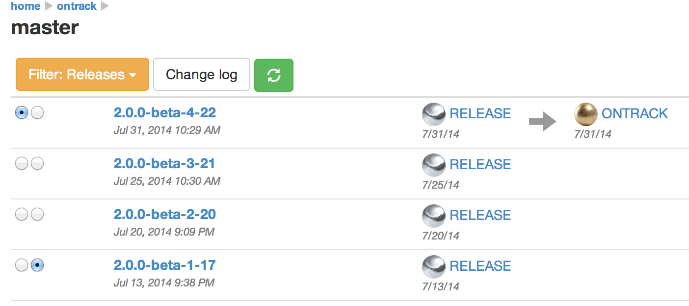

ontrack will allow you to monitor and control the state of your continuous delivery pipeline, for all your projects and all their branches.
By qualifying the builds with promotion levels and validation stamps, ontrack will help you assert the quality of your applications.

Integrating with your CI engine, your ticketing system and your SCM, ontrack will allow you to check the content of your builds by accessing the change logs, by asserting the promotion level for a given issue, and many other possibilities.
You can go even further by using ontrack in turn to drive your pipeline, since its REST API can be used to get the builds with the desired quality.
Change logs
In order to manage change logs, ontrack can access to SCM like:
- Subversion
- Git

Supported ticketing systems for the change logs and the searches are:
- JIRA
- GitHub

Promotion of builds can be driven from:
- Jenkins - the promotions and validation stamps are triggered using a Jenkins plug-in for ontrack
- Artifactory - the promotions are read from Artifactory using the release status of the builds
Integration with Jenkins is also present in ontrack by showing the status of the different jobs in the associated branches, promotions or validation stamps.
Resources
Documentation for ontrack in available in its Wiki.
Development
ontrack is an open-source project, maintained by Nemerosa on GitHub.